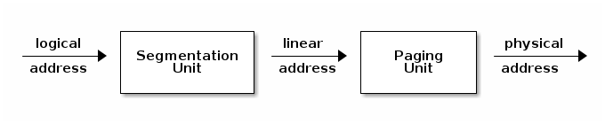
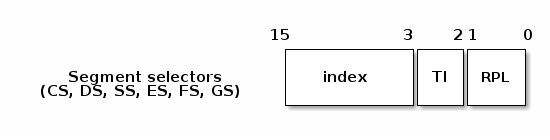
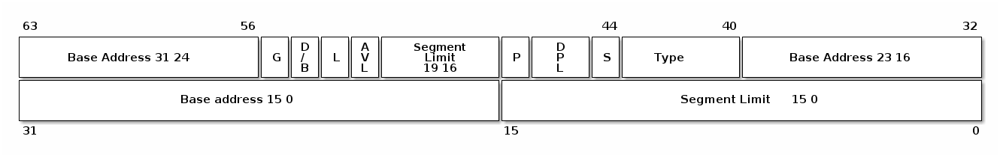
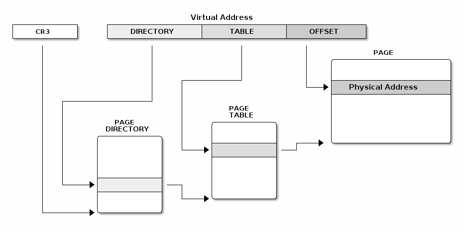
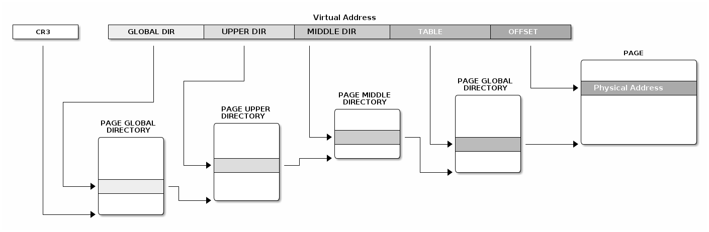
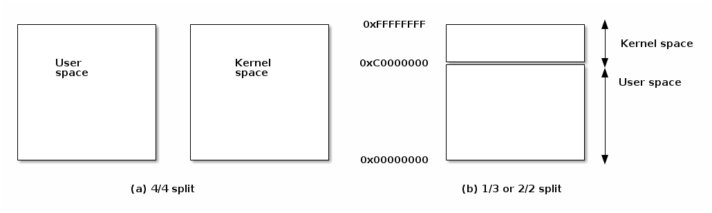
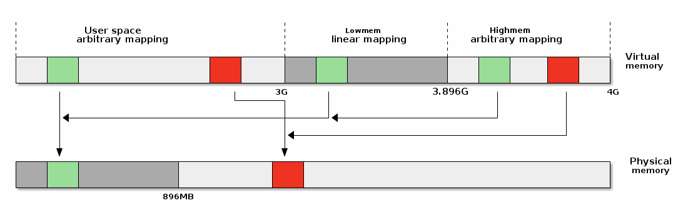
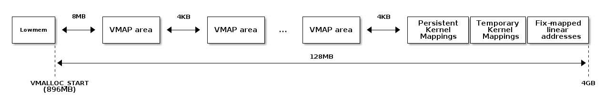

SO2 Lecture 06 - Address Space¶
课程目标：¶
- x86 MMU
- 分段
- 分页
- TLB
- Linux 地址空间
- 用户空间
- 内核空间
- 高内存（high memory）
x86 MMU¶
x86 内存管理单元（MMU）包括分段单元和分页单元。分段单元可用于定义由逻辑（虚拟）起始地址、基本线性（映射）地址和大小定义的逻辑内存段。段也可以根据访问类型（读取、执行、写入）或特权级别（例如，我们可以定义一些只能由内核访问的段）来限制访问。
当 CPU 进行内存访问时，它将使用分段单元根据段描述符中的信息将逻辑地址转换为线性地址。
如果启用了分页，线性地址将使用页表中的信息进一步转换为物理地址。
请注意，分段单元无法禁用，因此如果启用了 MMU，将始终使用分段。

选择器¶
程序可以使用多个段（segment），为了确定使用哪个段，使用了特殊寄存器（称为选择器）。常用的基本选择器有 CS——“代码选择器”，DS——“数据选择器”和 SS——“堆栈选择器”。
指令获取默认使用 CS，而数据访问默认使用 DS，除非使用了堆栈（例如，通过 pop 和 push 指令进行数据访问），这种情况下默认使用 SS。
选择器有三个主要字段：索引，表索引（TI）和运行特权级别（RPL）：

索引用于确定应使用描述符表的哪个条目。 TI 用于选择全局描述符表（GDT）或局部描述符表（LDT）。这些表实际上是从特殊寄存器 `GDTR`（用于 GDT）和 `LDTR`（用于 LDT）指定的位置开始的数组。
注解
LDT 设计用于允许应用程序可以定义它们自己的特定段。尽管不是很多应用程序使用此功能，但 Linux（和 Windows）提供了系统调用，允许应用程序创建自己的段。
RPL 仅用于 CS，并表示当前特权级别。有 4 个特权级别，最高级别为 0（通常由内核使用），最低级别为 3（通常由用户应用程序使用）。
段描述符¶
CPU 使用选择器的 index 字段来访问一个 8 字节的描述符：

- Base: 段的起始线性地址
- Limit: 段的大小
- G: 粒度位：如果设置，则大小以字节为单位，否则以 4K 页面为单位
- B/D: 数据/代码
- Type: 代码段、数据/堆栈、TSS、LDT、GDT
- Protection: 访问段所需的最低特权级别（RPL 与 DPL 进行比较）
一些描述符字段你应该比较熟悉。这是因为它们与我们之前讨论的中断描述符有一些相似之处。
Linux 中的分段¶
在 Linux 中，段不用于定义堆栈、代码或数据。这些将使用分页单元进行设置，因为它允许更好的粒度，并且更重要的是，它允许 Linux 使用通用的方法，使得其在其他（不支持分段）的体系架构上也能工作。
然而，由于分段单元无法禁用，Linux 必须创建 4 个通用的 0-4GB 段，分别用于内核代码、内核数据、用户代码和用户数据。
除此之外，Linux 还使用段与 set_thread_area 系统调用一起来实现线程本地存储（TLS）。
它还使用 TSS 段来定义内核堆栈，以备在特权级别变化时（例如，在用户空间运行时的系统调用、中断发生时）使用。
/*
* Linux 中每个 CPU 的 GDT 布局：
*
* 0——空（null） <=== 缓存行 #1
* 1——保留
* 2——保留
* 3——保留
*
* 4——未使用 <=== 缓存行 #2
* 5——未使用
*
* ------- TLS（线程本地存储）段的开始：
*
* 6——TLS 段 #1 [ glibc 的 TLS 段 ]
* 7——TLS 段 #2 [ Wine 的 %fs Win32 段 ]
* 8——TLS 段 #3 <=== 缓存行 #3
* 9——保留
* 10——保留
* 11——保留
*
* ------- 内核段的开始：
*
* 12——内核代码段 <=== 缓存行 #4
* 13——内核数据段
* 14——默认用户 CS
* 15——默认用户 DS
* 16——TSS <=== 缓存行 #5
* 17——LDT
* 18——PNPBIOS 支持（16->32 门）
* 19——PNPBIOS 支持
* 20——PNPBIOS 支持 <=== 缓存行 #6
* 21——PNPBIOS 支持
* 22——PNPBIOS 支持
* 23——APM BIOS 支持
* 24——APM BIOS 支持 <=== 缓存行 #7
* 25——APM BIOS 支持
*
* 26——ESPFIX 小型 SS
* 27——每个 CPU [ 指向每个 CPU 数据区的偏移量 ]
* 28——stack_canary-20 [ 用于栈保护 ] <=== 缓存行 #8
* 29——未使用
* 30——未使用
* 31——用于双重故障处理的 TSS
*/
DEFINE_PER_CPU_PAGE_ALIGNED(struct gdt_page, gdt_page) = { .gdt = {
#ifdef CONFIG_X86_64
/*
* 在长模式下，我们也需要有效的内核数据和代码段
* IRET 将检查段类型 kkeil 2000/10/28
* 同样，sysret 需要特殊的 GDT 布局
*
* 目前，TLS 描述符与 i386 上的位置不同。
* 希望没有人期望它们位置固定（Wine？）
*/
[GDT_ENTRY_KERNEL32_CS] = GDT_ENTRY_INIT(0xc09b, 0, 0xfffff),
[GDT_ENTRY_KERNEL_CS] = GDT_ENTRY_INIT(0xa09b, 0, 0xfffff),
[GDT_ENTRY_KERNEL_DS] = GDT_ENTRY_INIT(0xc093, 0, 0xfffff),
[GDT_ENTRY_DEFAULT_USER32_CS] = GDT_ENTRY_INIT(0xc0fb, 0, 0xfffff),
[GDT_ENTRY_DEFAULT_USER_DS] = GDT_ENTRY_INIT(0xc0f3, 0, 0xfffff),
[GDT_ENTRY_DEFAULT_USER_CS] = GDT_ENTRY_INIT(0xa0fb, 0, 0xfffff),
#else
[GDT_ENTRY_KERNEL_CS] = GDT_ENTRY_INIT(0xc09a, 0, 0xfffff),
[GDT_ENTRY_KERNEL_DS] = GDT_ENTRY_INIT(0xc092, 0, 0xfffff),
[GDT_ENTRY_DEFAULT_USER_CS] = GDT_ENTRY_INIT(0xc0fa, 0, 0xfffff),
[GDT_ENTRY_DEFAULT_USER_DS] = GDT_ENTRY_INIT(0xc0f2, 0, 0xfffff),
/*
* 用于调用 PnPBIOS 的段具有字节粒度。
* 代码段和数据段具有固定的 64K 限制，
* 传输段的大小在运行时设置。
*/
/* 32 位代码 */
[GDT_ENTRY_PNPBIOS_CS32] = GDT_ENTRY_INIT(0x409a, 0, 0xffff),
/* 16 位代码 */
[GDT_ENTRY_PNPBIOS_CS16] = GDT_ENTRY_INIT(0x009a, 0, 0xffff),
/* 16 位数据 */
[GDT_ENTRY_PNPBIOS_DS] = GDT_ENTRY_INIT(0x0092, 0, 0xffff),
/* 16 位数据 */
[GDT_ENTRY_PNPBIOS_TS1] = GDT_ENTRY_INIT(0x0092, 0, 0),
/* 16 位数据 */
[GDT_ENTRY_PNPBIOS_TS2] = GDT_ENTRY_INIT(0x0092, 0, 0),
/*
* APM 段具有字节粒度，并且它们的基址在运行时设置。
* 所有段的限制都是 64K。
*/
/* 32 位代码 */
[GDT_ENTRY_APMBIOS_BASE] = GDT_ENTRY_INIT(0x409a, 0, 0xffff),
/* 16 位代码 */
[GDT_ENTRY_APMBIOS_BASE+1] = GDT_ENTRY_INIT(0x009a, 0, 0xffff),
/* 数据 */
[GDT_ENTRY_APMBIOS_BASE+2] = GDT_ENTRY_INIT(0x4092, 0, 0xffff),
[GDT_ENTRY_ESPFIX_SS] = GDT_ENTRY_INIT(0xc092, 0, 0xfffff),
[GDT_ENTRY_PERCPU] = GDT_ENTRY_INIT(0xc092, 0, 0xfffff),
GDT_STACK_CANARY_INIT
#endif
} };
EXPORT_PER_CPU_SYMBOL_GPL(gdt_page);
x86 分页¶
x86 分页单元支持两种类型的分页：常规分页和扩展分页。
常规分页有 2 级，并且固定的页面大小为 4KB。线性地址被分割为三个字段：
- 目录（directory）（最高的 10 位）
- 表（table）（接下来的 10 位）
- 偏移量（offset）（最低的 12 位）

当启用扩展分页时，使用单级分页，页面大小为 4MB。线性地址被分割为两个字段：
- 目录（最高的10位）
- 偏移量（最低的22位）
页表¶
我们可以混合使用常规分页和扩展分页，目录页有一个位来指定是使用扩展分页还是常规分页。特殊的 CR3 寄存器指向页目录的基址，而页目录项指向页表的基址。
页目录和页表都有 1024 个条目，每个条目占用 4 字节。
所有表都存储在内存中，页表地址是物理地址。
页表项字段：
- 存在/不存在
- PFN（页面帧号）：物理地址的最高 20 位
- 访问位——不由硬件更新（可由操作系统用于管理）
- 脏位——不由硬件更新（可由操作系统用于管理）
- 访问权限：读/写
- 特权级别：用户/特权级
- 页面大小——仅适用于页目录；如果设置，将使用扩展分页
- PCD（页面缓存禁用），PWT（页面写穿透）
Linux 分页¶
Linux 分页使用 4 个级别以支持 64 位架构。下图显示了如何使用多个虚拟地址块来索引页表并计算物理地址。
Linux 具有用于创建和遍历页表的通用 API。借助于此我们可以实现使用相同的通用代码来创建和修改内核和进程的地址空间，该代码依赖于宏和函数，将这些通用操作转换为在不同体系结构上运行的代码。
以下是使用 Linux 页表 API 将虚拟地址转换为物理地址的示例：
struct * page;
pgd_t pgd;
pmd_t pmd;
pud_t pud;
pte_t pte;
void *laddr, *paddr;
pgd = pgd_offset(mm, vaddr);
pud = pud_offet(pgd, vaddr);
pmd = pmd_offset(pud, vaddr);
pte = pte_offset(pmd, vaddr);
page = pte_page(pte);
laddr = page_address(page);
paddr = virt_to_phys(laddr);
为了支持具有少于 4 级分页的体系结构（例如32位 x86），某些宏和/或函数可以为 0/空：
static inline pud_t * pud_offset(pgd_t * pgd,unsigned long address)
{
return (pud_t *)pgd;
}
static inline pmd_t * pmd_offset(pud_t * pud,unsigned long address)
{
return (pmd_t *)pud;
}
转译后备缓冲区（TLB）¶
在使用虚拟内存时，由于表页组织的原因，我们可能需要额外进行 1 次（x86 扩展分页）、2 次（x86 常规分页）或 3 次（x86 64 位）内存访问。
一个称为转译后备缓冲区（TLB）的特殊缓存用于加速从虚拟地址到物理地址的转换。
TLB 具有以下特性：
- 缓存分页信息（PFN、权限、特权级别）
- 内容寻址存储器/关联存储器
- 非常小（64-128）
- 非常快（由于并行搜索实现，单周期）
- CPU 通常有两个 TLB：i-TLB（代码）和 d-TLB（数据）
- TLB 缺失耗损：高达数百个周期
与其他缓存一样，我们必须小心，以免产生一致性问题。
例如，当更改将一页的映射指向页表中的另一个物理内存位置时，我们必须使关联的 TLB 条目无效。否则，MMU 将执行转换到旧的物理地址而不是新的物理地址。
x86 平台可以通过两种类型的操作使 TLB 失效。
单地址失效：
mov $addr, %eax
invlpg %(eax)
全失效：
mov %cr3, %eax
mov %eax, %cr3
Linux 地址空间¶
32 位系统的地址空间选项¶
实现内核和用户空间有两个主要选项：为每个空间提供专用地址空间，或者分割一个共享的地址空间。

每种选项都有优缺点：
- 专用内核空间的缺点：
- 每次系统调用都需要完全使 TLB 失效
- 共享地址空间的缺点：
- 内核和用户进程的地址空间较小
Linux 在 32 位系统中使用分割地址空间，尽管在过去还有支持 4/4 分割或专用内核地址空间的选项（在支持的体系结构上，如 x86）。Linux 在 64 位系统中始终使用分割地址空间。
下面是 Linux 地址空间的概述：

线性映射¶
线性映射是一种特定的虚拟页面到物理页面的映射方式，其中虚拟页面 V、V + 1、...、V + n 被映射到物理页面 P、P + 1、...、P + n。
为了理解线性映射的必要性，我们应该看一下涉及同时使用虚拟地址和物理地址的页面的常见内核操作，如 I/O 传输：
- 使用内核缓冲区的虚拟地址从用户空间复制数据
- 遍历页表将内核缓冲区的虚拟地址转换为物理地址
- 使用内核缓冲区的物理地址启动 DMA 传输
但是，如果我们使用线性映射，并且内核缓冲区位于线性映射区域中，那么：
- 虚拟地址到物理地址空间的转换可以减少为一次操作（而不是遍历页表）
- 使用更少的内存来创建页表
- 内核内存使用更少的 TLB 条目
高内存¶
虚拟地址空间中的“高内存”部分用于创建任意映射（与低内存中的线性映射相对）。在 32 位系统中，高内存区域绝对是必需的，以便访问低内存以外的物理内存。然而，高内存在 64 位系统上也被使用，但主要用于允许内核空间中的任意映射。

高内存区域有多种类型的映射：
- 多页面永久映射（vmalloc、ioremap）
- 临时的单页面映射（atomic_kmap）
- 永久的单页面映射（kmap、固定映射的线性地址）
多页面映射允许将物理内存范围映射到高内存区域。每个这样的映射都由一个不可访问的页面保护，以捕获缓冲区溢出和下溢错误。
将多个页面映射到高内存的 API 包括：
void* vmalloc(unsigned long size);
void vfree(void * addr);
void *ioremap(unsigned long offset, unsigned size);
void iounmap(void * addr);
vmalloc() 用于在内核虚拟地址空间中分配非连续的系统内存页面作为连续段。它在分配大型缓冲区时非常有用，因为由于碎片化，很难找到连续的大块物理内存空闲。
ioremap() 用于将内核地址空间映射到设备内存或设备寄存器。它将连续的物理内存范围映射到高内存，并禁用页面缓存。
固定映射的线性地址¶
固定映射的线性地址是一类特殊的单页面映射，用于访问常用外设（如 APIC 或 IO APIC）的寄存器。
典型的外设 I/O 访问方式是使用基址（内核虚拟地址空间中映射外设寄存器的位置）+ 不同寄存器的偏移量。
为了优化访问速度，基址在编译时被预留（例如，0xFFFFF000）。由于基址是常量，形如 base + register offset 的寄存器访问也是常量，因此编译器会避免生成额外的指令。
总结一下，固定映射的线性地址是：
- 预留的虚拟地址（常量）
- 在引导（boot）过程中映射到物理地址
set_fixmap(idx, phys_addr)
set_fixmap_nocache(idx, phys_addr)
这些地址是由体系结构定义的，以 x86 为例，以下是其映射表：
/*
* 这里定义了所有在编译时“特殊”的虚拟地址。
* 目的是在编译时有一个常量地址，但物理地址只在引导过程中设置。
* 对于 x86_32：我们从虚拟内存的末尾（0xfffff000）开始分配这些特殊地址。
* 这样还可以保证安全的 vmalloc()，可以确保这些特殊地址和 vmalloc() 的地址不重叠。
*
* 这些“编译时分配”的内存缓冲区是固定大小的 4k 页（如果使用的增量大于 1，则可以更大）。
* 使用 set_fixmap(idx,phys) 将物理内存与 fixmap 索引关联起来。
*
* 这些缓冲区的 TLB 条目在任务切换时不会被刷新。
*/
enum fixed_addresses {
#ifdef CONFIG_X86_32
FIX_HOLE,
#else
#ifdef CONFIG_X86_VSYSCALL_EMULATION
VSYSCALL_PAGE = (FIXADDR_TOP - VSYSCALL_ADDR) >> PAGE_SHIFT,
#endif
#endif
FIX_DBGP_BASE,
FIX_EARLYCON_MEM_BASE,
#ifdef CONFIG_PROVIDE_OHCI1394_DMA_INIT
FIX_OHCI1394_BASE,
#endif
#ifdef CONFIG_X86_LOCAL_APIC
FIX_APIC_BASE, /* 本地（CPU）APIC - 对 SMP 有要求或无要求 */
#endif
#ifdef CONFIG_X86_IO_APIC
FIX_IO_APIC_BASE_0,
FIX_IO_APIC_BASE_END = FIX_IO_APIC_BASE_0 + MAX_IO_APICS - 1,
#endif
#ifdef CONFIG_X86_32
FIX_KMAP_BEGIN, /* 用于临时内核映射的保留 pte */
FIX_KMAP_END = FIX_KMAP_BEGIN+(KM_TYPE_NR*NR_CPUS)-1,
#ifdef CONFIG_PCI_MMCONFIG
FIX_PCIE_MCFG,
#endif
请注意，虚拟地址和固定地址索引之间的转换是多么容易：
#define __fix_to_virt(x) (FIXADDR_TOP - ((x) << PAGE_SHIFT))
#define __virt_to_fix(x) ((FIXADDR_TOP - ((x)&PAGE_MASK)) >> PAGE_SHIFT)
#ifndef __ASSEMBLY__
/*
* ‘索引到地址’转换。如果有人直接使用索引而没有进行转换，我们会通过一个空指针解引用内核崩溃来捕捉该错误。我们还会捕捉到非法的索引范围。
*/
static __always_inline unsigned long fix_to_virt(const unsigned int idx)
{
BUILD_BUG_ON(idx >= __end_of_fixed_addresses);
return __fix_to_virt(idx);
}
static inline unsigned long virt_to_fix(const unsigned long vaddr)
{
BUG_ON(vaddr >= FIXADDR_TOP || vaddr < FIXADDR_START);
return __virt_to_fix(vaddr);
}
inline long fix_to_virt(const unsigned int idx)
{
if (idx >= __end_of_fixed_addresses)
__this_fixmap_does_not_exist();
return (0xffffe000UL - (idx << PAGE_SHIFT));
}
临时映射¶
临时映射可用于在内核空间中快速映射单个物理页面。它可以在中断上下文中使用，但是原子 kmap 部分在 kmap_atomic() 和 kunmap_atomic() 之间定义，不能被抢占。这就是为什么它们被称为临时映射，因为它们只能短暂使用。
临时映射非常快速，因为不需要锁定或搜索，并且不需要完全无效化 TLB，只需无效化特定的虚拟页。
以下是一些展示临时映射实现的代码片段：
#define kmap_atomic(page) kmap_atomic_prot(page, kmap_prot)
void *kmap_atomic_high_prot(struct page *page, pgprot_t prot)
{
unsigned long vaddr;
int idx, type;
type = kmap_atomic_idx_push();
idx = type + KM_TYPE_NR*smp_processor_id();
vaddr = __fix_to_virt(FIX_KMAP_BEGIN + idx);
BUG_ON(!pte_none(*(kmap_pte-idx)));
set_pte(kmap_pte-idx, mk_pte(page, prot));
arch_flush_lazy_mmu_mode();
return (void *)vaddr;
}
EXPORT_SYMBOL(kmap_atomic_high_prot);
static inline int kmap_atomic_idx_push(void)
{
int idx = __this_cpu_inc_return(__kmap_atomic_idx) - 1;
#ifdef CONFIG_DEBUG_HIGHMEM
WARN_ON_ONCE(in_irq() && !irqs_disabled());
BUG_ON(idx >= KM_TYPE_NR);
#endif
return idx;
}
请注意，这里使用了固定映射的线性地址和类似堆栈的方法：每个 CPU 都有 KM_TYPE_NR 个保留条目，按照先入先出的顺序使用。这允许同时使用多个临时映射，例如在进程上下文中使用一个，在中断处理程序中使用一个，以及在任务队列或软中断中使用几个。
永久映射¶
永久映射允许用户在长时间（未定义的）期间保持映射，这意味着在映射之后和释放之前可以进行上下文切换。
然而，这种灵活性是有代价的。需要执行搜索操作来找到一个空闲条目，并且它们不能在中断上下文中使用——尝试找到一个空闲的虚拟地址页面的操作可能会阻塞。永久映射的可用数量是有限的（通常保留一页用于永久映射）。